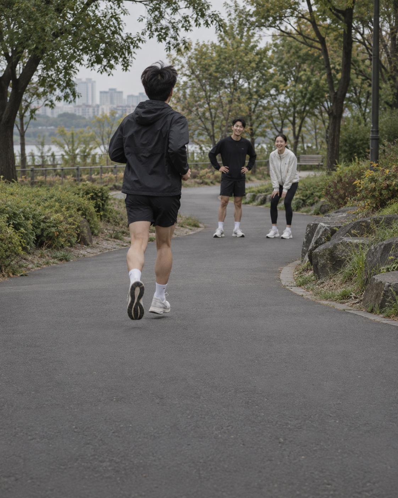
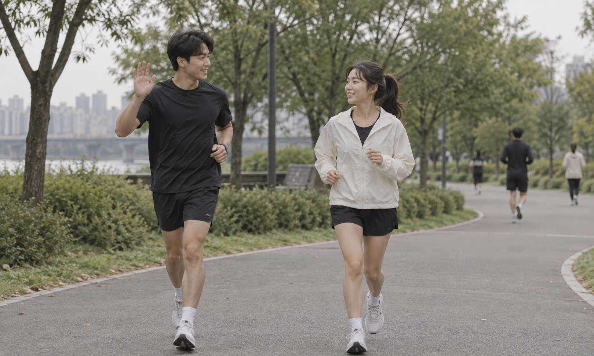
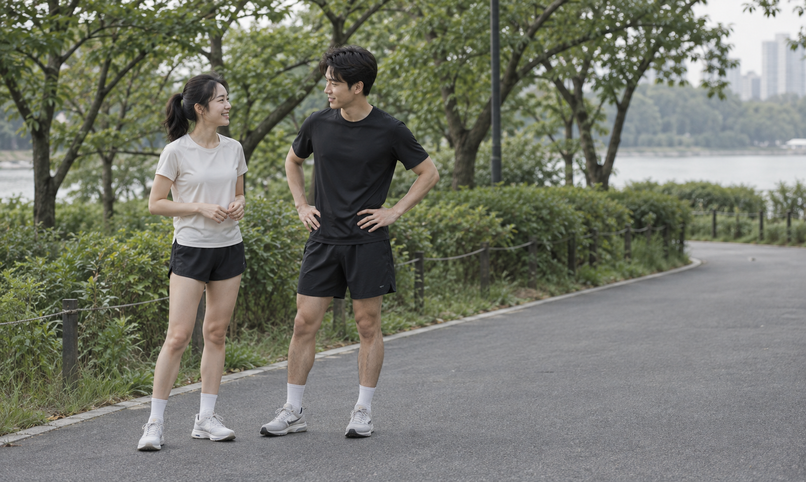
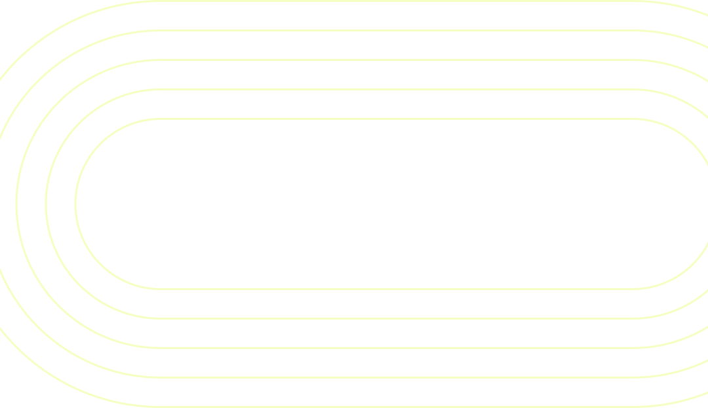

첫 러닝 모임,
무슨 말을 꺼낼까요?
달리기보다 첫인사가 더 낯설 때.
런메이트 · 5장 시안 · 사진은 이번 기획용 AI 생성 이미지입니다.
가상 서비스 시안으로, 마지막 CTA는 실제 페이지로 연결되지 않습니다.

달리기보다 첫인사가 더 낯설 때.

어떤 말을 할지 고민되면, 인사부터 건네봐요.

저는 천천히 달리고 싶어요. 어떠세요?
짧은 인사를 나눴다면, 이제 함께 출발해요.
